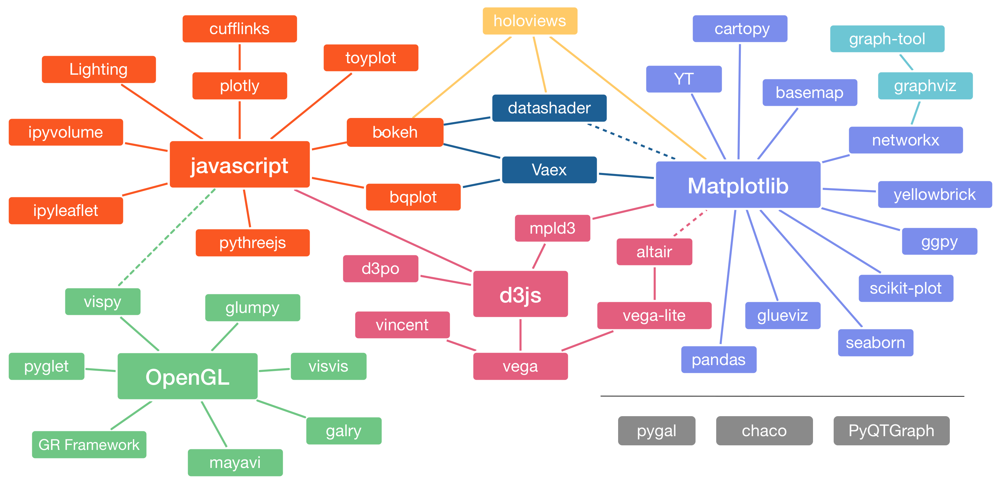

<map name="GraffleExport">
	<area shape=rect coords="2702,880,2938,969" href="https://github.com/has2k1/plotnine">
	<area shape=rect coords="929,1271,1165,1359" href="https://github.com/rossant/galry">
	<area shape=rect coords="883,1074,1119,1162" href="https://github.com/almarklein/visvis">
	<area shape=rect coords="1468,20,1763,109" href="http://holoviews.org">
	<area shape=rect coords="355,1074,788,1222" href="http://pyopengl.sourceforge.net">
	<area shape=rect coords="1438,823,1734,971" href="https://d3js.org">
	<area shape=rect coords="1996,490,2504,638" href="http://matplotlib.org">
	<area shape=rect coords="23,1074,259,1162" href="http://pyglet.readthedocs.io/en/pyglet-1.2-maintenance/">
	<area shape=rect coords="2108,43,2403,132" href="http://scitools.org.uk/cartopy/">
	<area shape=rect coords="2527,74,2881,163" href="https://graph-tool.skewed.de">
	<area shape=rect coords="1527,474,1822,563" href="http://vaex.astro.rug.nl">
	<area shape=rect coords="2182,1271,2477,1359" href="http://docs.enthought.com/chaco/">
	<area shape=rect coords="1883,1271,2120,1359" href="http://pygal.org/en/stable/">
	<area shape=rect coords="2540,1271,2894,1359" href="http://pyqtgraph.org">
	<area shape=rect coords="94,1313,448,1401" href="http://gr-framework.org">
	<area shape=rect coords="2672,218,2968,306" href="http://www.graphviz.org">
	<area shape=rect coords="569,1367,864,1456" href="http://code.enthought.com/projects/mayavi/">
	<area shape=rect coords="1438,1074,1734,1162" href="https://vega.github.io/vega/">
	<area shape=rect coords="1817,919,2171,1008" href="https://vega.github.io/vega-lite/">
	<area shape=rect coords="1041,776,1278,864" href="http://www.d3po.org">
	<area shape=rect coords="1966,197,2202,286" href="http://yt-project.org">
	<area shape=rect coords="2241,876,2477,965" href="http://www.glueviz.org/en/stable/">
	<area shape=rect coords="124,168,478,256" href="http://lightning-viz.org">
	<area shape=rect coords="23,599,378,687" href="https://github.com/ellisonbg/ipyleaflet">
	<area shape=rect coords="622,895,917,983" href="http://glumpy.github.io">
	<area shape=rect coords="194,876,431,965" href="http://vispy.org">
	<area shape=rect coords="1078,947,1374,1036" href="https://github.com/wrobstory/vincent">
	<area shape=rect coords="1876,724,2112,813" href="https://altair-viz.github.io">
	<area shape=rect coords="1566,652,1802,741" href="https://mpld3.github.io">
	<area shape=rect coords="1497,286,1851,374" href="https://github.com/bokeh/datashader">
	<area shape=rect coords="553,43,907,132" href="https://github.com/santosjorge/cufflinks">
	<area shape=rect coords="23,359,378,448" href="https://github.com/maartenbreddels/ipyvolume">
	<area shape=rect coords="583,218,878,306" href="https://plot.ly">
	<area shape=rect coords="982,132,1278,221" href="http://toyplot.readthedocs.io/en/stable/">
	<area shape=rect coords="1057,361,1352,448" href="http://bokeh.pydata.org/en/latest/">
	<area shape=rect coords="1112,557,1407,646" href="https://github.com/bloomberg/bqplot">
	<area shape=rect coords="593,697,947,785" href="https://github.com/jovyan/pythreejs">
	<area shape=rect coords="2320,238,2616,327" href="http://matplotlib.org/basemap/">
	<area shape=rect coords="2584,383,2938,472" href="https://networkx.github.io">
	<area shape=rect coords="2672,549,3027,638" href="http://www.scikit-yb.org/en/latest/">
	<area shape=rect coords="2702,672,2997,761" href="https://github.com/reiinakano/scikit-plot">
	<area shape=rect coords="2439,692,2675,781" href="http://yhat.github.io/ggpy/">
	<area shape=rect coords="2072,1053,2309,1142" href="http://pandas.pydata.org/index.html">
	<area shape=rect coords="2515,1006,2752,1095" href="http://seaborn.pydata.org/index.html">
</map>

